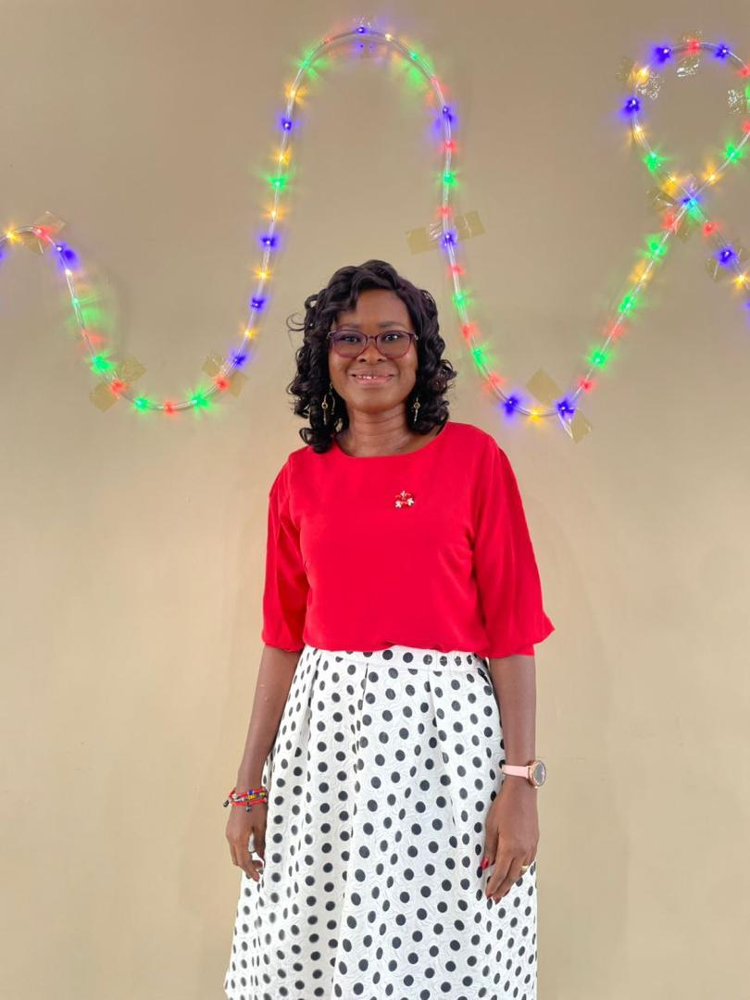

Welcome to FYS
Grooming for Leadership
Grooming for Leadership
Nurturing the next generation of Christian servants and believers.
Empowering future leaders through focused discipleship and practical ministry
Forming faith and character in today's young men and women.
A dynamic youth ministry committed to spiritual growth and action.
Equipping the emerging generation with solid biblical truth and wisdom.

Dr. Benewaa Brefo Manuh
We are so fortunate to have the steadfast support of our visionary patron.
Their compassionate heart has been the foundation upon which this ministry is built.
Our patron's unwavering dedication and generous spirit ensure our future leaders are nurtured.
We recognize them today as a true champion and an inspirational example to us all.
We study outstanding characters in the bible
A book is studied and we share our thoughts on it
We have a day where we wear our favorite team's jersey to Church
This is to teach us to be proud of who we are and where we come from
On this day we rock our African prints to showcase our culture
This is to help us appreciate our roots and where we come from
We organize regular get-togethers to foster fellowship and unity among members.
These events provide opportunities for bonding and building lasting friendships.